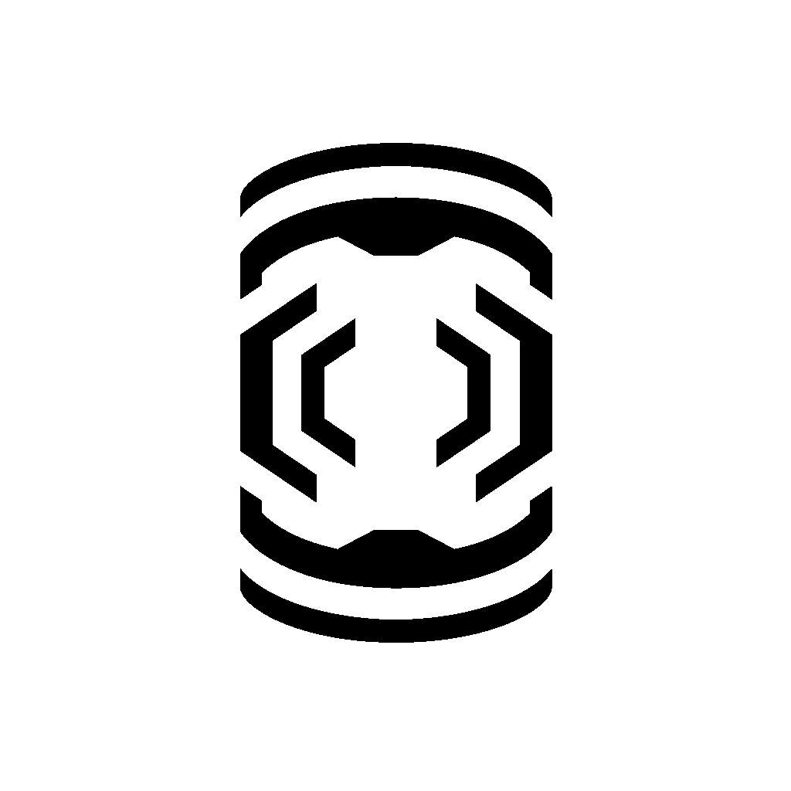
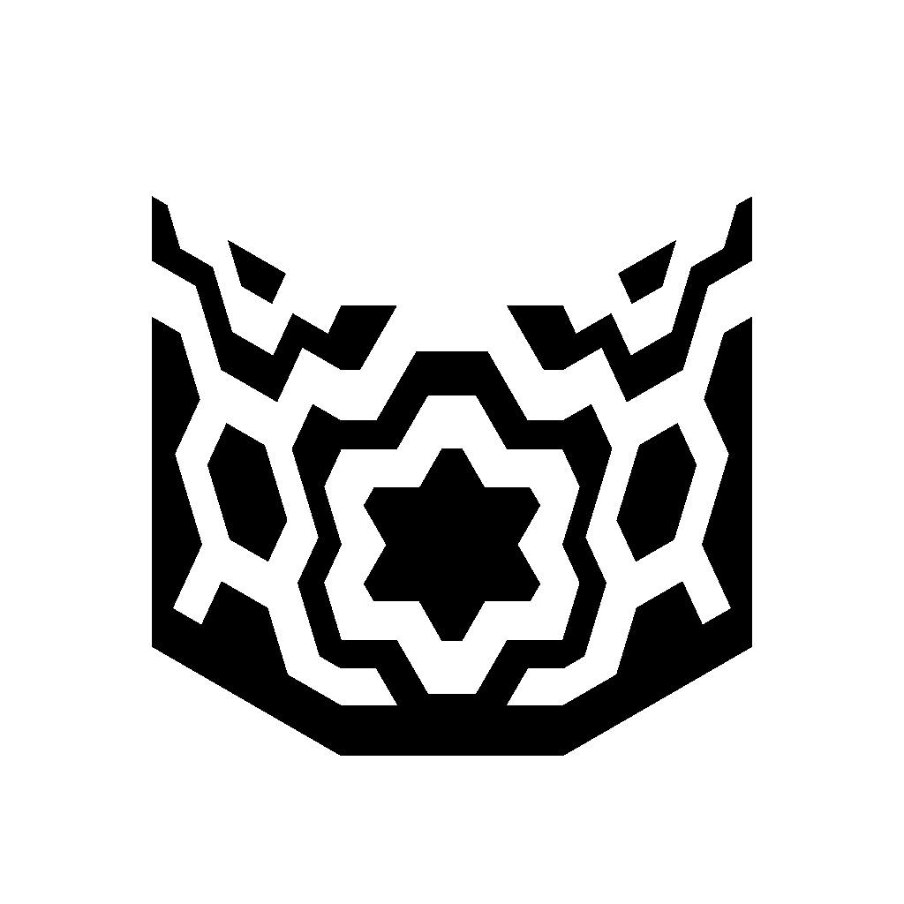
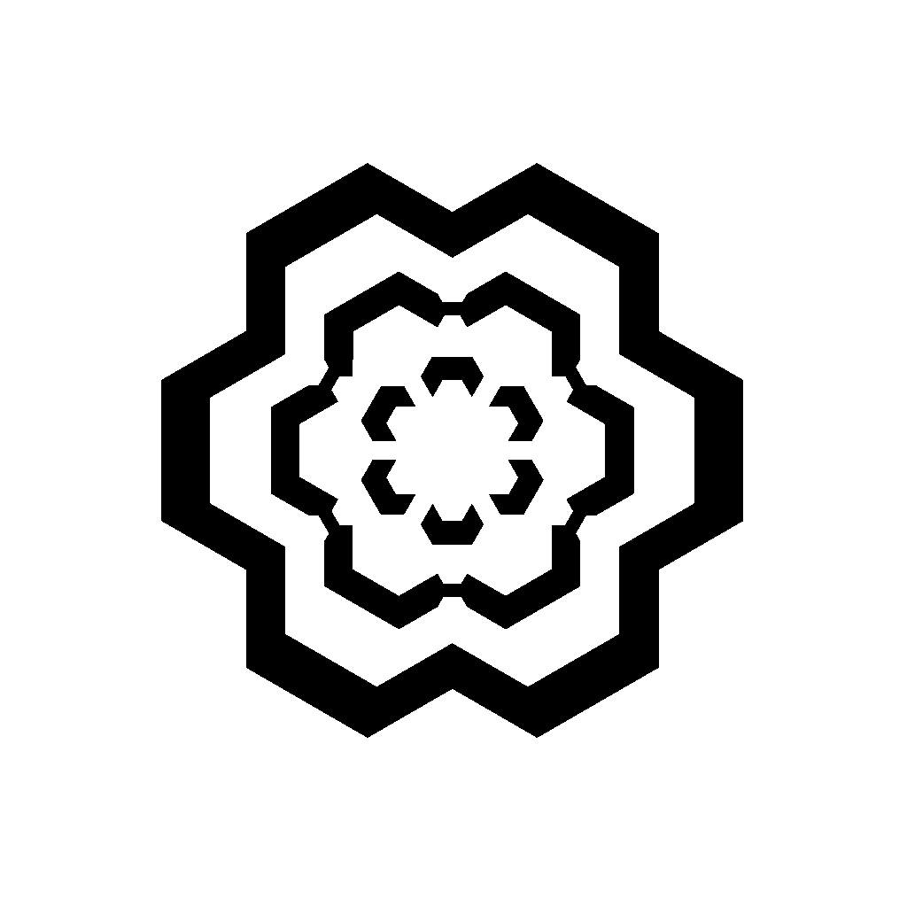
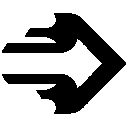
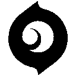
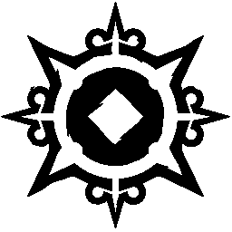

Duelliste
iso
Venu de Chine et spécialiste de missions délicates, Iso se fond dans le flux de Radianite pour démanteler les réseaux ennemis. Capable de restructurer l'énergie ambiante en protection anti-balles, il ne dévie pas de la route vers son prochain duel à mort.
COMPETENCES
- SAPE

- TIR COUPLÉ 
- CONTINGENCE 
- DUEL À HUIS CLOS 
Equipez-vous d'un carreau moléculaire. Tirez pour le lancer vers l'avant, ce qui rend brièvement fragiles tous les joueurs touchés. Le carreau peut traverser les objets solides, murs y compris.
Lancez un décompte de concentration. A la fin, vous entrez dans un état fluide pendant lequel les ennemis abattus que vous avez tués ou blessés génèrent un orbe d'énergie. Tirer sur cet orbe vous confère un bouclier absorbant une salve de dégâts de n'importe quelle source.
Préparez une concentration d'énergie prismatique. Utilisez le tir principal pour projeter un mur d'énergie indestructible qui bloque les balles.
Equipez-vous d'une arène inter-dimensionnelle. Utilisez le tir principal pour produire une colonne d'énergie sur le terrain, attirant le premier ennemi touché avec vous dans l'arène. Vous vous y affrontez dans un duel à mort.
TIPS
- Quand vous êtes invincible, la hitbox de votre bouclier et plus large et plus haute que votre personnage, vous pouvez donc plus difficilement vous cacher.
Jett
Représentante de sa patrie, la Corée du Sud, Jett dispose d'un style de combat basé sur l'agilité et l'esquive, qui lui permet de prendre des risques qu'elle seule peut se permettre de prendre. Elle tourne autour des affrontements et découpe ses ennemis avant même qu'ils ne s'en rendent compte.
COMPETENCES
- COURANT ASCENDANT

- VENT ARRIERE 
- AVERSE 
- TEMPÊTE DE LAME
Vous vous propulsez instantanément dans les airs.
Activez pour préparer une rafale de vent pendant une durée limitée. Réutilisez la compétence pour vous propulser dans la direction vers laquelle vous vous dirigez. Si vous êtes immobile, vous vous propulsez vers l'avant. Vous regagnez une charge de Vent arrière toutes les deux éliminations.
Lancez instantanément un projectile. Lorsqu'il touche une surface, il libère un nuage qui bloque la vision pendant un court instant. Maintenez la touche de la compétence pour courber la fumée dans la direction de votre réticule.
Equipez-vous d'un ensemble de couteaux de lancer extrêmement précis. Tirez pour lancer un seul couteau (se recharge en cas d'élimination). Utilisez le tir secondaire pour lancer tous les couteaux restants (ne se recharge pas).
TIPS
- Courant ascendant vous permet d’accéder à des positions surélevées où les adversaires ne penseront pas à regarder, vous permettant ainsi de les éliminer. Si vous commencez en défense, positionnez vous en hauteur en début de tour pour tendre une embuscade aux adversaires
- Vent ascendant est très utile pour se replacer et se mettre à l’abri surtout si vous utilisez un opérateur
- Averse permet de bloquer les lignes de vue, de fuir un combat ou d’entrer rapidement sur site. Faites cependant attention à sa durée (très courte) qui pourrait être contre-productive si vous n’avancez pas assez vite
- Dans un duel, vous pouvez combiner averse et vent arrière pour vous repositionner là où l’adversaire ne s’y attend pas, dans son dos par exemple, afin de le tuer plus facilement
Neon
L'agent philippin, Neon, s'élance vers l'avant à une vitesse fulgurante, libérant de grosses décharges de radiance biomagnétique générées frénétiquement par son corps. Elle se lance à la poursuite des ennemis qui n'ont pas le temps de s'y préparer et les élimine aussi vite que l'éclair.
COMPETENCES
- ECLAIR RELAIS
- VITESSE SUPERIEURE
- VOIE RAPIDE
- ULTRA VITESSE
Lancez instantanément un éclair d'énergie qui rebondit une fois. Chaque fois qu'il rencontre une surface, l'éclair électrifie le sol en dessous avec un coup de jus.
Chargez instantanément le pouvoir de Neon pour décupler sa vitesse. À la fin du chargement, utilisez tir secondaire pour déclencher une glissade électrique. Vous regagnez une charge de glissade toutes les deux éliminations.
Tirez deux lignes d'énergie dans le sol devant vous qui parcourent une courte distance ou jusqu'à frapper une surface. Elles s'élèvent alors en murs d'électricité statique qui bloquent la vision et infligent des dégâts aux ennemis qui les traversent.
Libérez toute la puissance et la vitesse de Neon pendant un court instant. Tirez pour canaliser son pouvoir en un rayon électrique mortel à grande précision. Chaque élimination réinitialise sa durée.
TIPS
- Voie rapide est utile pour bloquer la vision et se frayer un chemin vers un site rapidement
- Eclair relais peut toucher les joueurs à travers les obstacles et les murs, parfait pour entrer sur un site en déstabilisant les adversaires cachés
- Attention avec vitesse supérieur, Neon fait beaucoup de bruit, ce qui la rend plus facile à localiser pour ses ennemis
- Les éclairs tirés par Neon quand elle est en Ultra vitesse n’ont aucune limite de portée. De plus, il n’y a pas de distinction de dégâts entre les différentes parties du corps, seulement en fonction de la distance qui sépare Neon de sa cible
Phoenix
En provenance du Royaume-Uni, Phoenix illumine le champ de bataille avec ses pouvoirs astraux et son style de combat flamboyant. Peu importe que les renforts arrivent ou non, il fonce au combat quand il le décide.
COMPETENCES
- BALLE COURBE
- MAINS BRÛLANTES
- BRASIER
- REVANCHE
Equipez-vous d'un orbe flamboyant qui explose peu après avoir été lancé, aveuglant tous les joueurs qui le regardent. Tirez pour courber la trajectoire de l'orbe vers la gauche. Utilisez le tir secondaire pour courber la trajectoire de l'orbe vers la droite.
Equipez-vous d'une boule de feu. Tirez pour lancer une boule de feu qui explose après un certain temps ou en touchant le sol, créant une zone enflammée persistante qui blesse les ennemis et les alliés mais vous soigne.
Equipez-vous d'un mur de feu. Tirez pour créer une ligne de feu qui se déplace vers l'avant, créant un mur de feu qui bloque la vision et blesse les joueurs qui le traversent. Maintenez le tir pour courber le mur dans la direction de votre réticule.
Placez instantanément un marqueur sur votre position. Tant que cette compétence est active, mourir vous renvoie à cette position avec tous vos PV (même chose si la compétence expire).
TIPS
- Vous pouvez lancer main brûlante sur un spike pour empêcher les adversaires de le désamorcer
- Brasier bloque la visibilité et peut piéger un adversaire d’un côté du mur soit pour vous faciliter la pose du spike, soit pour ralentir les ennemis.
- N’hésitez à courber votre mur pour vous protéger au mieux si vous voulez désamorcer
- Revanche sera très utile pour prendre l’information sur un site, n’hésitez donc pas à jouer agressif. Le but est de rechercher le combat pour obtenir le plus d’informations pour vos alliés.
- Vous pouvez aussi vous servir de cet ultime pour ramasser le spike, même si vous êtes abattu, vous garderez le spike si vous avez eu le temps de le récupérer.
- Si vous mourrez pendant votre ultime, vous réapparaitrez là où vous avez posé votre ultime. Attention si un ennemi vous attends près de la marque, vous serez sans défense pendant quelques secondes.
Raze
Armée de sa personnalité et de sa grosse artillerie, Raze fait une entrée explosive depuis le Brésil. Grâce à sa force brute, elle excelle à débusquer les ennemis retranchés et à faire le ménage dans les espaces étroits, le tout avec une bonne dose de "« boum ».
COMPETENCES
- PACK EXPLOSIF
- GRENADE GIGOGNE
- BOUM BOT
- BOUQUET FINAL
Lancez instantanément un pack explosif qui se colle aux surfaces. Réutilisez la compétence pour déclencher l'explosion, ce qui blesse et déplace tous ceux pris dans le souffle. Raze n'est pas blessée par cette compétence, mais elle subit des dégâts de chute si elle tombe d'assez haut.
Equipez-vous d'une grenade à sous-munitions. Tirez pour lancer la grenade. Elle inflige des dégâts et crée des sous-munitions qui blessent tous ceux qui sont à leur portée. Utilisez le tir secondaire pour la lancer en cloche. Vous regagnez une charge de Grenade gigogne toutes les deux éliminations.
Equipez-vous d'un Boum Bot. Tirez pour déployer le bot, ce qui le propulse en ligne droite sur le sol. Il rebondit contre les murs. Les Boum Bots se verrouillent sur les ennemis situés dans un cône face à eux et les chassent, explosant quand ils les atteignent en infligeant de lourds dégâts.
Equipez-vous d'un lance-roquettes. Tirez pour lancer une roquette qui inflige de lourds dégâts de zone au premier contact.
TIPS
- La grenade gigogne vous permet de déloger les adversaires pour leur faire quitter leur abri ou de vous faire gagner du temps si vous cherchez à vous enfuir
- Le boum bot permet lui aussi de dénicher des adversaires et de confirmer leur présence ou non
- N’hésitez pas à utiliser votre pack explosif pour vous déplacer ainsi que pour éviter certaines compétences comme le nuage de poison de viper
- Vous pouvez vous propulsez avec un second pack explosif alors que vous êtres déjà propulsé par un premier pack
Reyna
Originaire du cœur du Mexique, Reyna est une experte des combats singuliers qui se renforce à chaque élimination qu'elle réussit. Son efficacité n'est limitée que par son habileté, ce qui la rend très dépendante de ses propres performances.
COMPETENCES
- DEVORATION
- REBUFFADE
- OEILLADE
- IMPERATRICE 
Les ennemis tués par Reyna laissent des orbes d'âme qui durent 3 sec. Vous consommez instantanément un orbe d'âme proche pour rapidement regagner des PV pendant un court instant. Au-delà de 100 PV, les PV ainsi gagnés sont perdus progressivement. Si impératrice est active, cette compétence se lancera automatiquement et ne consommera pas d'orbe.
Vous consommez instantanément un orbe d'âme proche et devenez intangible pendant un court instant. Si impératrice est active, vous devenez également invisible.
Equipez-vous d'un œil éthéré destructible. Activez pour lancer l'œil vers l'avant sur une courte distance. L'œil rend myopes tous les ennemis qui le regardent.
Entrez instantanément en furie, ce qui augmente considérablement vos vitesses de tir, de changement d'arme et de rechargement. Réussir une élimination réinitialise la durée.
TIPS
- Vous pouvez poser Œillade au sol pour le rendre plus difficile à viser.
- Rebuffade vous rend invulnérable, même aux explosions du Spike. Cela nécessite toutefois un timing très précis.
Yoru
Le Japonais Yoru perce des trous dans la réalité pour s'infiltrer derrière les lignes ennemies sans se faire repérer. En faisant preuve d'autant de ruse que d'agressivité, il prend ses cibles par surprise avant qu'elles n'aient le temps de se retourner.
COMPETENCES
- ANGLE MORT
- VISITE SURPRISE
- FEINTE
- TRANSFERT DIMENSIONNEL
Equipez-vous d'un fragment dimensionnel instable arraché à la réalité. TIREZ pour lancer le fragment, qui provoquera un éclat aveuglant peu après avoir touché une surface dure.
Equipez-vous d'une balise dimensionnelle. Tirez pour envoyer la balise vers l'avant. Utilisez le tir secondaire pour poser une balise stationnaire devant vous. Activez la balise pour vous y téléporter. Utilisez la balise pour feindre la téléportation.
Equipez-vous d'un écho qui se transforme en double de Yoru une fois activé. Tirez pour activer instantanément le double et l'envoyer vers l'avant. Utilisez le tir secondaire pour poser un écho inactif devant vous. Utilisez un écho inactif pour le transformer en double et l'envoyer vers l'avant. Le double explose en émettant une lumière aveuglante quand les ennemis le détruisent.
Equipez-vous d'un masque qui permet de voir entre les dimensions. Tirez pour passer dans la dimension de Yoru. Les ennemis hors de la zone ne peuvent ni vous voir ni vous affecter. Réactivez pour quitter la dimension de Yoru prématurément.
TIPS
- Vous pouvez sauter avant de déclencher la téléportation de Visite Surprise pour ne pas rester immobile.
- Jeter Angle Mort à vos pieds comme une boule de fumée ninja est tout à fait envisageable pendant que vous rushez. Le flash aura lieu dans votre dos mais les adversaires devant vous ou à votre poursuite seront aveuglés.
- Angle Mort détruit la vitre d’Ascent
- Faites attention au délai avant que Transfert Dimensionnel ne soit actif. Vous risquez de partir trop tôt et d’être vu par vos ennemis.
- Vous pouvez ramasser le spike en étant invisible avec Transfert Dimensionnel